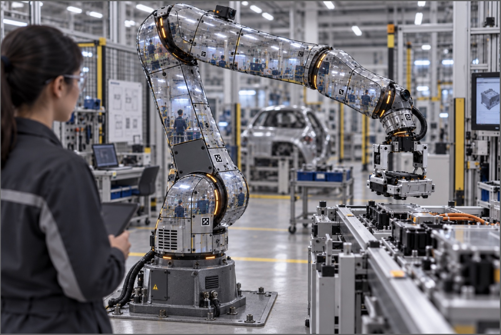

04 M — Sheet 02 / 06
Redesign a robotic arm to be invisible.

Dr. E's Object-Redesign Challenge deals every group two cards at random: an object, and a format the object now has to fit. Group Five drew Robotic Arm and Invisible, See-Through, Transparent. I worked on this with Faisal, Parviz and Kerem. Nothing was built — the output is a concept and a two-minute pitch.
Our answer was the GhostArm. The outer shell of the arm is a very thin micro-OLED display. LiDAR, micro-cameras and other sensors read the environment around the arm and pass it to a computer, which drives the panels to show what is behind it. To anyone watching, the arm is not there.
We aimed it at the entertainment industry — magicians, theatres, Disney, the Nolop haunted house — with medical, military and clean-room work as secondary uses. The argument for the client is that a moving prop nobody has to edit out of the shot removes a whole step from post-production, which saves both time and money.
The cost goes up a long way: high-density OLED panels, high-resolution cameras, the processors to drive them, and materials to support all of it. For the entertainment client we thought that was justified by the editing it saves.
What we could not solve: pixel density is not high enough yet to make the illusion completely convincing. And bendable panels are a much harder design problem than flat ones, so the parts of the arm that are not simple geometry would still give it away.